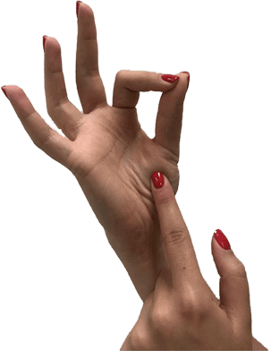
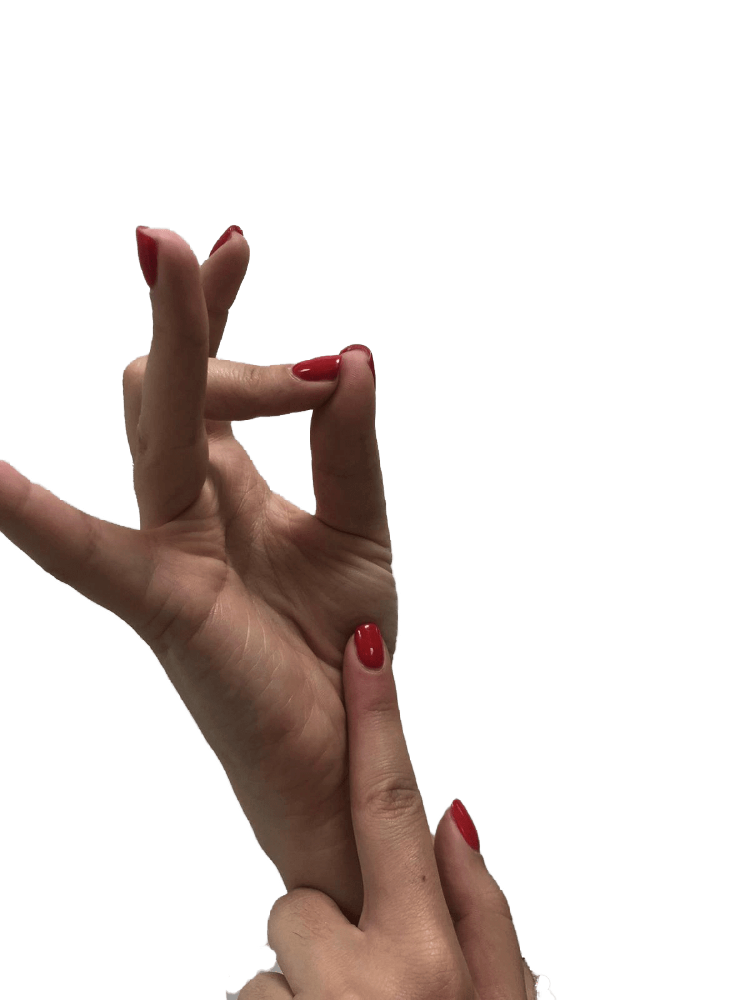
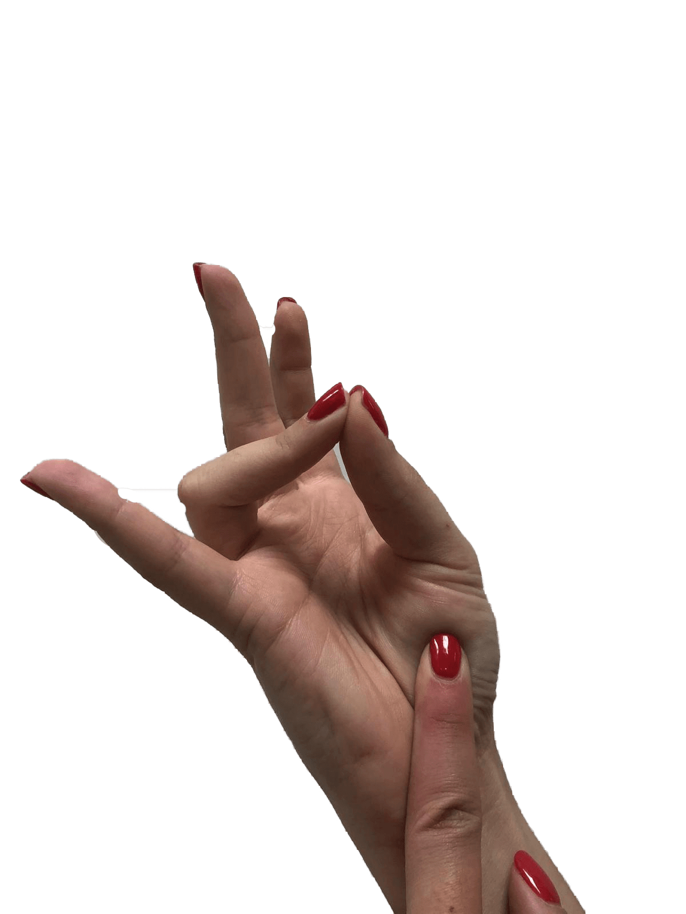
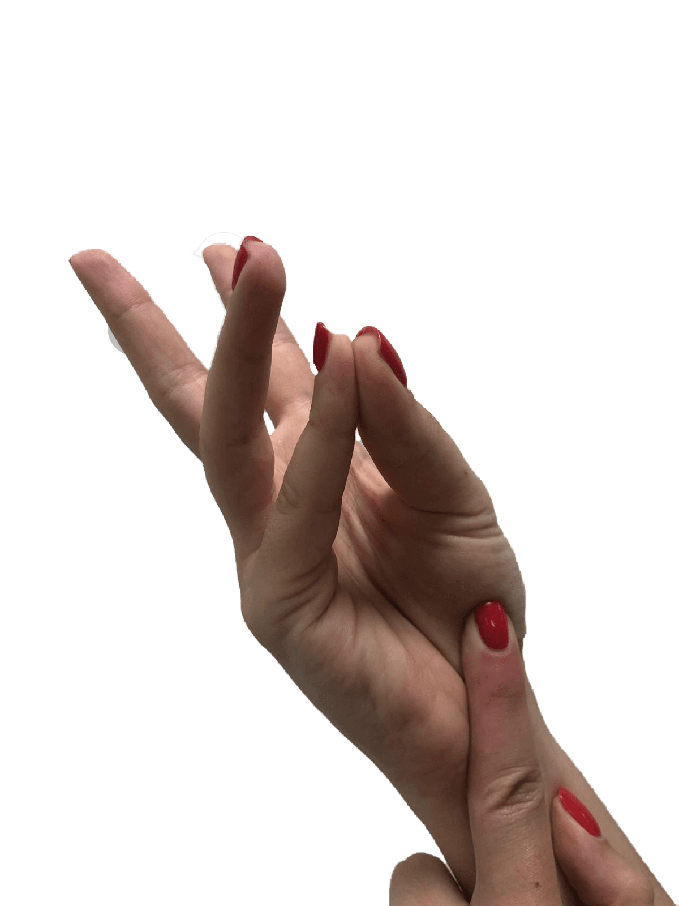

רייר
מדיום רייר
מדיום
מדיום וול
וול דאן
מידות עשייה על קצה המזלג
הסבר קצר על מידות עשייה:
לכל נתח בשר מתאימות מספר מידות עשייה נכונות שיגרמו לטעמו להיות הכי מדויק שיש לדוגמה: לנתחים שומניים ,כמו אנטריקוט וצלעות ,קיים טווח מידות עשייה רחב ואילו לנתחים בעלי כמות שומן מועטה טווח צר.
על מנת להגיע למידת העשייה הרצויה והמדוייקת שתבחרו ניתן להשתמש בשתי שיטות:
-
1. שיטת הטמפרטורה-
לכל מידת עשייה יש טמפרטורת בשר מומלצת. לצורך שיטה זו כל מה שתצטרכו לעשות הוא לקנות מד טמפרטורה לבשר (קיים בכל חנות בישול), לבדוק מידי פעם בתהליך הבישול את טמפרטורת הבשר שלכם וכמובן לגלול מטה בעמוד שלנו כדי לגלות מהם הטמפרטות המומלצות לכל מאחת ממידות העשייה.
-
2. שיטת האצבעות -
הדרך הטובה ביותר להסביר את השיטה הזו היא לראות אותה!
הקליקו כדי לצפות בסרטון הדרכה על השיטה:
סוגי מידות עשייה - מרייר ועד מדיום וול
רייר (R)
צריבה קלה של הנתח כך שכלפי חוץ חלקיו
עשויים אך מבפנים הבשר אדום אדום .
טמפרטורה נדרשת: בין 47-50 מעלות.
שיטת הטמפרטורה :

שיטת האצבעות :

מדיום רייר (MR)
מעיין קשת אדומה כך שמבחוץ החלק
עשוי.
מבפנים ורדרד ואילו במרכז אדום ומעט נא.
טמפרטורה נדרשת: בין 55-60 מעלות
שיטת הטמפרטורה :

שיטת האצבעות:

מדיום (M)
פנים הנתח ורדרד וחלקו
החיצוני עשוי היטב .
טמפרטורה נדרשת בין 60-65 מעלות.
מידת המלצת הקצב!
שיטת הטמפרטורה :

שיטת האצבעות:
מדיום וול (MW)
פנים הנתח בגווני ורדרד-אפרפר
והחלק החיצוני עשוי היטב .
הטמפרטורה הנדרשת: בין 65-70 מעלות.
שיטת הטמפרטורה :
שיטת האצבעות:

וול דאן (WD)
מידת עשיה זו מיועדת
לאלה שאוהבים את הנתח שלהם מעט שרוף .
החלק הפנימי בצבע אפרפר.
טמפרטורה נדרשת: 70 מעלות ומעלה
שיטת הטמפרטורה :
שיטת האצבעות:
